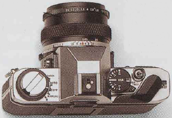

Equipo de Campo
Haz tus deberes antes de salir al campo: comprueba tu material acerca de la localidad tal como libros guía y mapas detallados antes de salir. Los mapas geológicos son de gran ayuda (ver recuadro) pero debido a que los colores sobreimpresos pueden tapar características tales como carreteras y canteras, sería conveniente llevar un mapa detallado y a gran escala para situar el punto donde te encuentras. Llevar una brújula en las áreas donde existen pocas referencias topográficas para poder localizar sitios. Es esencial llevar la ropa para protegerse.
Cuando trabajes al pie de un acantilado o en una cantera se necesita un casco. Ponte gafas protectoras para proteger tus ojos de las lascas que salen proyectadas al usar el martillo, y guantes resistentes para proteger tus manos. Usa, con moderación, un martillo geológico para romper los bloques de material ya caído. Los cinceles de acero resistentes son útiles para arrancar diferentes minerales o partir rocas. Escribe notas, toma fotografías o haz un video de la localidad de tus ejemplares. Sin notas de campo y muy particularmente sin su localización, los ejemplares no tienen mucho valor científico.
Localizando el sitio
Una brújula y un mapa te ayudarán a encontrar el sitio cuando tengas pocos indicios de campo como referencia.
Seguridad en el campo
Un casco, unas gafas protectoras y unos guantes resistentes son el equipo esencial de seguridad: incluso la caída de un fragmento pequeño de roca puede causar grandes daños.
Lupa
Una lupa de 10 aumentos te permite ver tu roca y tus minerales con más detalles permitiendo su identificación.
Registrando los ejemplares
Las muestras de minerales o rocas tienen poco interés sin una información detallada de su localización. Registra los detalles en el campo y no al llegar a casa cuando ya has olvidado la realidad. Escribe notas y haz esquemas en una libreta pequeña, y toma fotos de los estratos, estructuras de las rocas y de su emplazamiento geológico. Usa la cámara de video.
Recogiendo y empaquetando
Usa el martillo de geólogo con moderación. Rompe solamente rocas que ya se encuentran en el suelo. No uses el martillo en afloramientos de canteras. Recoge con moderación, envolviendo cuidadosamente los ejemplares con papel de periódico, bolsas de tela o plástico de burbujas. Pon claramente etiquetas en cada ejemplar.